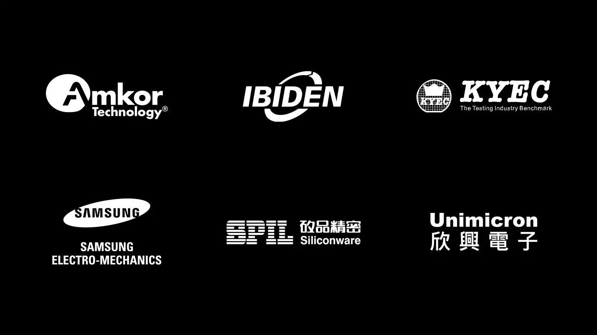

01
重拍照片日 10/27/2026
Picture Retake Day 10/27/2026
重拍照片日定于2026年10月27日。
Picture Retake Day is scheduled for October 27, 2026.
原始报道 / Original source ↗DAILY NEWS · 每日新闻简报
Independent AI-assisted summaries of linked reports. Headlines, dates and source URLs are supplied by NewsAPI; summaries are not independent verification of full articles. Please read original reports for details.
Picture Retake Day 10/27/2026
重拍照片日定于2026年10月27日。
Picture Retake Day is scheduled for October 27, 2026.
原始报道 / Original source ↗This Weeks WHS Athletic Schedule 10/19/26 – 10/25/26
本周的WHS体育日程包括多场比赛安排。
This week's WHS athletic schedule includes multiple game arrangements.
原始报道 / Original source ↗Class of 2027 Chipotle Fundraiser 10/24
2027届的Chipotle筹款活动将在10月24日举行。
The Class of 2027 Chipotle fundraiser will take place on October 24.
原始报道 / Original source ↗Senior Class Lynch Creek Fundraiser
高年级班的Lynch Creek筹款活动现已开始接受订单。
The Senior Class Lynch Creek fundraiser is now accepting orders.
原始报道 / Original source ↗Senior Class Krispy Kreme Fundraiser
高年级班的Krispy Kreme筹款活动正在进行中。
The Senior Class Krispy Kreme fundraiser is currently underway.
原始报道 / Original source ↗布伦特原油与WTI美国原油最新市场行情。
Brent and WTI crude oil market quotations.
价格及更新时间以行情提供方为准。
Hundreds of houses collapse as powerful earthquake hits China (VIDEOS)
中国西藏地区发生强烈地震，导致数百栋房屋倒塌。
A powerful earthquake struck China's Tibet region, causing hundreds of houses to collapse.
原始报道 / Original source ↗OpenAI Aims to Lock In $30 Billion Funding Round by Next Week
OpenAI接近完成一轮融资，预计筹集高达300亿美元。
OpenAI is close to finalizing a funding round aiming to raise up to $30 billion.
原始报道 / Original source ↗
NVIDIA, Supply Chain Partners Expand Production Capacity to Accelerate AI Infrastructure
NVIDIA正在与供应链合作伙伴合作，扩大其生产能力。
NVIDIA is collaborating with supply chain partners to expand production capacity.
原始报道 / Original source ↗
Voting machines aren't deliberately switching votes. Here's what's likely happening
美国多个州的投票机在2026年中期选举中并非故意更改选民的候选人选择。
Voting machines in several U.S. states are not deliberately changing voters' candidate choices.
原始报道 / Original source ↗
Bond traders are backing off Fed rate hike bets — here's what it means for mortgage rates
债券市场对油价上涨引发的通胀波动并未表现出担忧。
The bond market shows no concern over inflation waves sparked by rising oil prices.
原始报道 / Original source ↗
Mave raises $34M to pull existing security tools into one agentic system
以色列安全初创公司Mave Security Ltd.宣布筹集3400万美元。
Israeli startup Mave Security Ltd. has raised $34 million to integrate existing security tools.
原始报道 / Original source ↗Nasdaq dives more than 750 points as investors worry massive AI spending won't pay off
纳斯达克指数因对AI投资和高油价的担忧而大幅下跌。
The Nasdaq Composite Index fell sharply amid concerns over AI investments and high oil prices.
原始报道 / Original source ↗Support for sending military aid to Ukraine has fallen
66%的登记选民表示更同情乌克兰，支持下降。
Support for military aid to Ukraine has decreased among registered voters.
原始报道 / Original source ↗
Author Correction: DYNLL1 binds to MRE11 to limit DNA end resection in BRCA1-deficient cells
Nature期刊发布了关于DYNLL1与MRE11结合的作者更正。
An author correction regarding DYNLL1 binding to MRE11 has been published in Nature.
原始报道 / Original source ↗